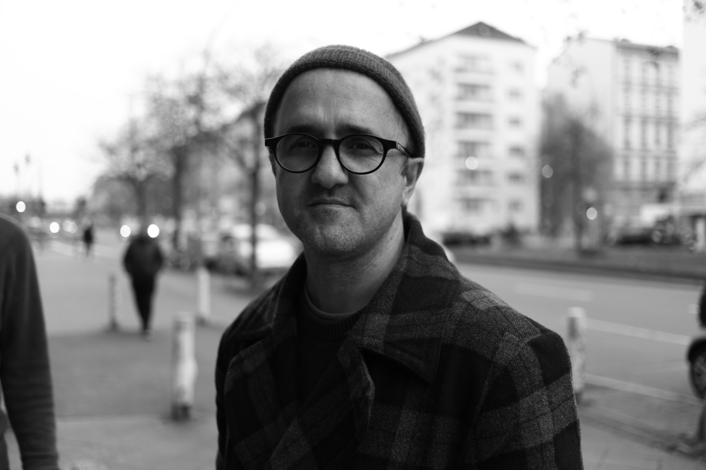

Arto Ushan

Summary
I am 46 years old and I think it is a good time to change my career path. That is why I am studying web development in depth and want to find a position that matches my current experience. This will allow me to further develop my skills, which means I can benefit people and change the world for the better.
Education
- 2011-2015: Berlin University of the Arts, Insitute for Art in Context, MA in Curatorial Practices, Berlin, Germany
Work experience
- 2020 - present time: Endel Sound GmbH, User Support Lead. Responsibilities: Coordination of the user support department, communication with users and other departments of the company, finding solutions to problems and helping users solve them.
Skills
- Ability to work in a team
- Ability to quickly solve emerging problems
- Creativity
- Organizational skills
Hier you can learn more about my hobby.
Contact me